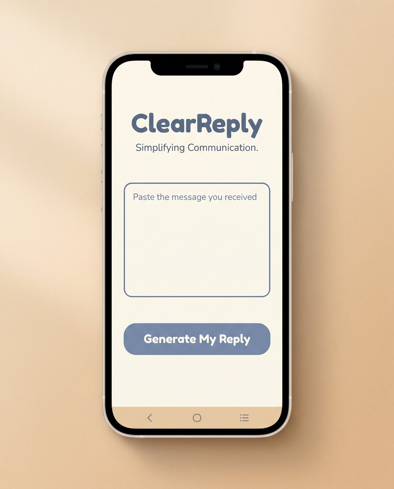
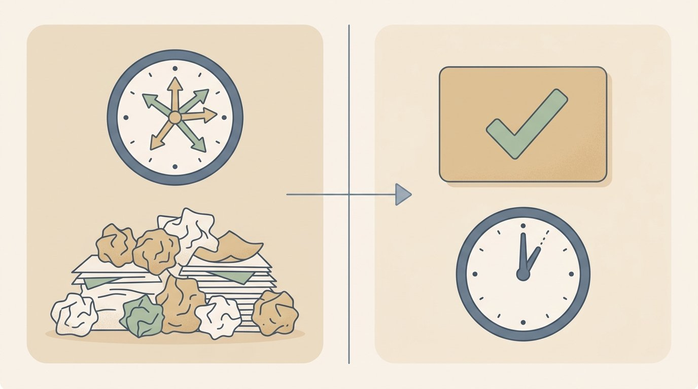
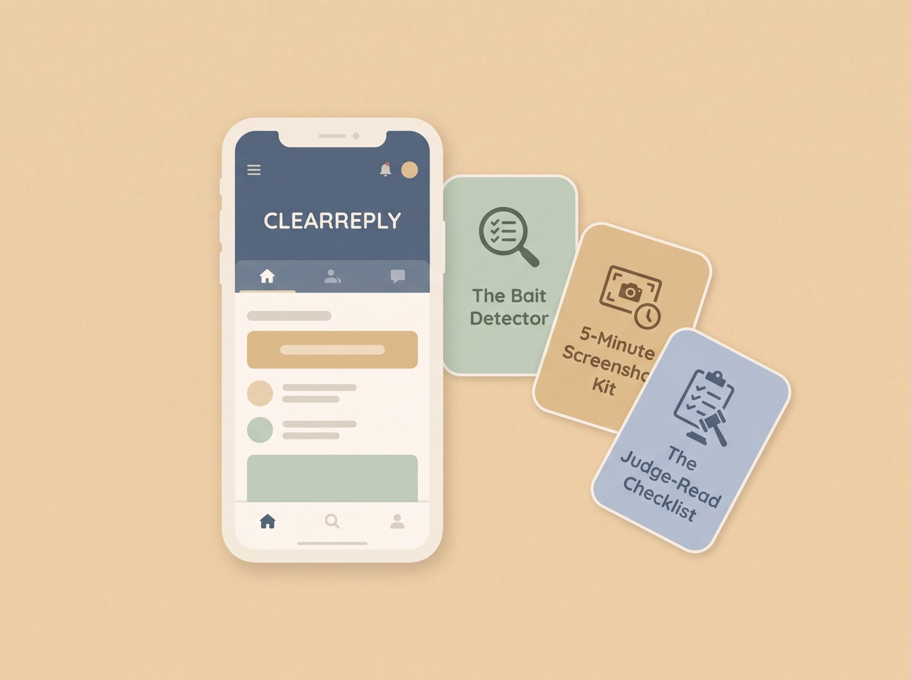

ClearReply is a simple AI tool inspired by the Brief, Informative, Friendly, Firm approach — a widely known communication framework created by attorney and mediator Bill Eddy of the High Conflict Institute for responding to hostile messages. Paste the message you got. Answer 4 quick questions. Get 3 ready-to-send replies built from facts, not feelings.

Get Instant Access — $2714-day guarantee: use it on your next 5 real incoming messages. If you don't feel calmer and more confident hitting send, show us your 5 generated replies for a full refund — and keep all 3 bonuses.
Most parents think the way to protect themselves is to explain, defend, or correct everything a high-conflict co-parent says.
I believe the opposite: the less you explain, the safer you are.
Every extra sentence is one more thing that can be misread, screenshotted, or brought into a courtroom out of context.
This isn't a new theory. It's the core idea behind the Brief, Informative, Friendly, Firm approach, developed by attorney and mediator Bill Eddy of the High Conflict Institute specifically for responding to people who are difficult to communicate with:
The method works. The hard part was never understanding the approach — it's writing that kind of reply in the middle of feeling attacked, at 9pm, with your hands shaking.
ClearReply does the writing. You just paste, answer 4 questions, and pick a reply.
Here's what actually goes wrong when parents try to reply to a high-conflict message on their own — and none of it is because you're bad at this.
None of these happen because you handle conflict badly. They happen because writing a Brief, Informative, Friendly, Firm reply — on the spot, about your own life — is a genuinely hard writing task. That's the part a tool can do faster and more consistently than a tired brain at the end of a long day.
Parents in high-conflict co-parenting situations often describe spending 15-30 minutes on a single reply — rereading it, rewriting it, asking a friend to check the tone before hitting send.

If that happens even twice a week, that's over 25 hours a year spent rewriting the same kind of message — time that doesn't go to your kids, your work, or yourself.
$27 to get that time back, and to stop wondering whether your own words are going to be the thing that gets used against you. That's the trade.
ClearReply wasn't built by guessing what a good co-parenting reply looks like. It was built around the Brief, Informative, Friendly, Firm approach to hostile messages, and from studying the specific patterns that show up again and again in high-conflict messages: blame language, exaggerations ("you never," "you always"), guilt-tripping, and buried logistical requests hidden inside an emotional paragraph.
The tool's only job is to separate the actual request from the emotional noise around it, and hand you a reply that answers the request and ignores the noise. That's it. It doesn't replace a lawyer, and it doesn't promise a legal outcome — it applies a well-known communication approach to your exact situation, every time, in under a minute.
Be honest with yourself. ClearReply is built for one of these three people:
If any of that is you, this is one of the most useful $27 you'll spend this year.
If it's not you: if your co-parenting communication is generally calm and cooperative, you don't need this — save your $27, and come back if that ever changes.
[REAL TESTIMONIAL — add before publish once available]
Sample Result (illustrative example, not an actual buyer submission)
Incoming message: "You NEVER think about what's best for the kids. Typical. I guess I'll just handle EVERYTHING myself again this weekend."
ClearReply reply: "I can take the kids Saturday from 9am to 5pm as usual. Let me know if the pickup time needs to change."
Notice what's missing: no defense, no "that's not true," no explanation. Just the fact that answers the actual logistics buried in the message — which is what the Brief, Informative, Friendly, Firm approach is designed to produce.

14-day guarantee: use it on your next 5 real incoming messages. If you don't feel calmer and more confident hitting send, show us your 5 generated replies for a full refund — and keep all 3 bonuses.
★ Real Talk On Why It's Only $27 ★
This is the founding price for the first 200 parents, while we collect real usage and results. It goes up to $47 once that batch fills — and Bonus #3, the Judge-Read Checklist, is only included for parents who start before the founding batch closes.
No. The tool applies it for you. You just paste the message and answer 4 questions.
No. You get 3 plain-text reply options to review, edit if you want, and send yourself — there's nothing to install and nothing they have to join.
No. It's a one-time payment of $27 for ongoing access to the tool.
No tool can guarantee a legal or court outcome, and this one doesn't try to. It helps you write calmer, fact-based replies using an established communication method — it's not legal advice and it doesn't replace a family-law attorney for decisions specific to your case.
You get 3 different options (short, standard, and detailed) every time, and you can always edit before sending. Most parents find one of the three fits with little or no editing.
Use it on your next 5 real incoming messages within 14 days. If you don't feel calmer and more confident hitting send, show us your 5 generated replies and we'll refund you in full — you keep all 3 bonuses either way.
You're one 60-second habit away from a completely different Sunday night.
Same difficult co-parent. Same messages landing in your inbox. A different way of replying to them.
$27 to potentially get back 25+ hours a year — and stop wondering if your own words are the thing that gets used against you. That's the trade.
Get Instant Access — $2714-day guarantee. Keep the bonuses either way.